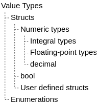

There are two main types: reference types and value types.
Storage
Reference types store the actual value in the heap, along with a pointer to the value, the reference, in the stack.
Value types store the value in the stack.
Passing
Reference types are passed by copying the reference, not the actual value.
Value types are passed by copying the original value.
References
References to reference and value types are possible using ref and out keywords.
References to reference types are passing the original reference to the actual value.
References to value types are passing the original values.
